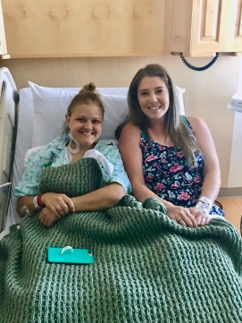
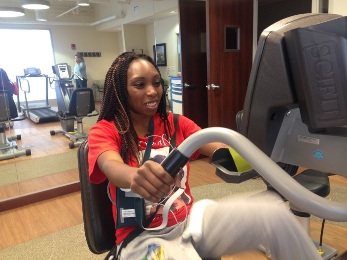

STORIES:
MELANY AND JENNIFER, THE ORGAN SOULMATES
Melany is a young mom with a lot of life to live, thanks to the gift of a living kidney donation from a complete stranger. At age 25, she was diagnosed with kidney disease while pregnant with twin boys, which later progressed into organ failure. Brought together by organ donation, Melany and Jennifer’s path to friendship is a remarkable story and a testament to the power of women helping women. Over time, our friendship blossomed and we became best friends. But that’s not even the best part. After many hospital visits, I finally received the call that I had a donor match — and it was Jen! Because she was an altruistic donor, meaning she was unrelated to me, they weren’t able to tell me who the donor was. But we eventually found out, and to our surprise, we matched 99.9 percent.
READ THE FULL STORYLINDSEY, THE CHAMPION FOR WELLNESS
Chronic pain is a condition that can easily take over your life, but Lindsey wouldn’t let it. After overcoming chronic ankle pain, she embarked on an unstoppable wellness journey. She has since lost 65 pounds (and counting), but that’s not the most remarkable part of her story. It’s her positive attitude and drive to keep taking on new challenges. May we all view life’s obstacles a little bit more like Lindsey does. Despite being born with a clubfoot (meaning my left foot is twisted inward), for most of my adult life, I have considered myself healthy, active and happy. Walking through life with ankle instability problems was always a nuisance, but I never let my condition slow me down.
READ THE FULL STORYBRIANNA, THE YOUNG MOTHER AND HEART FAILURE CHAMPION.
Three months after giving birth to a baby girl, Brianna was diagnosed with peripartum cardiomyopathy, a dangerous condition that caused her heart to become enlarged. She works tirelessly to keep her heart healthy and to educate others about this little-known condition affecting new mothers like her.n spite of those smiles, Brianna is a congestive heart failure patient at Baylor Scott & White Medical Center – Irving where she attends cardiac rehabilitation classes three days a week.
READ THE FULL STORY